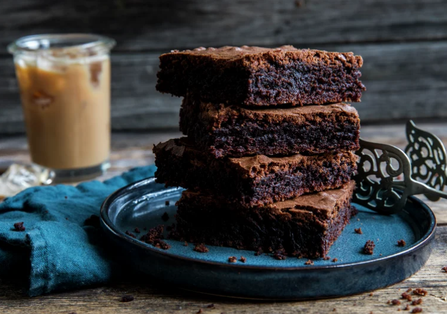

Brownies

A really chewy and good brownie, served with a cup of coffee or a glass of milk, surely no one can resist? Delicious!
- 6 dl sugar
- 8 tbsp Cocoa Powder
- 3 dl wheat flour
- 2 tsp vanilla sugar
- 1 tsp salt
- 300 g butter
- 4 pcs. egg
- Mix all the dry ingredients in a baking bowl
- Melt the butter in a small saucepan and add the butter to the mixture.
- Add eggs and mix everything well.
- Grease a small frying pan, approx. 25x35 cm. Then line the pan with baking paper. Pour the batter into the long pan and spread it out.
- Bake the cake in the middle of the oven at 150-160 °C for approx. 30 minutes.
- Cool the cake completely and cut it into pieces. Serve the cake with fresh raspberries, a raspberry coulis or a small sprinkling of icing sugar. An iced coffee or a glass of cold milk also tastes good.